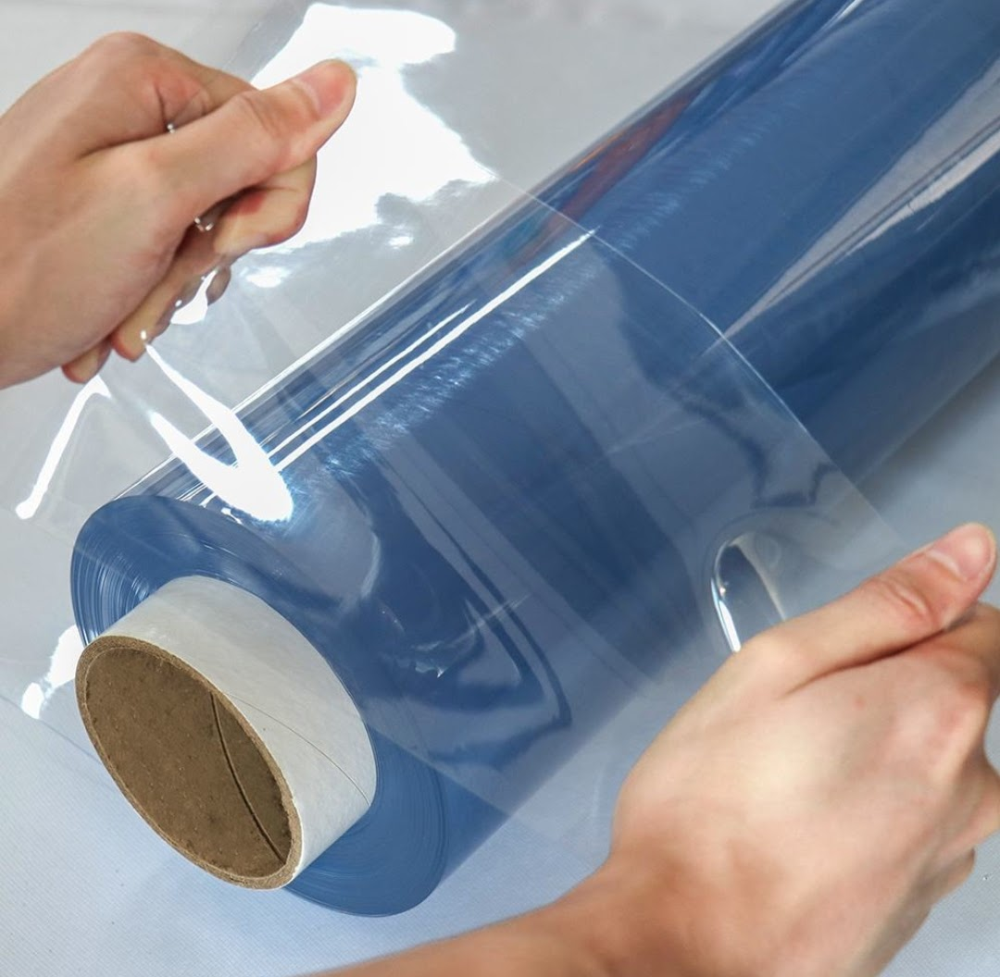
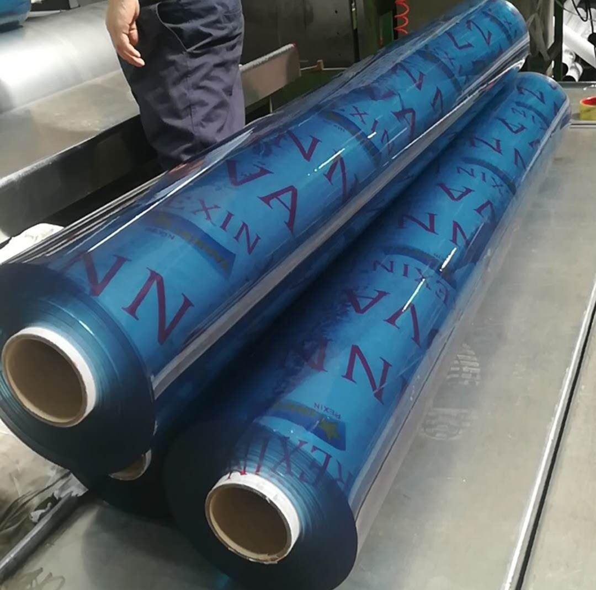
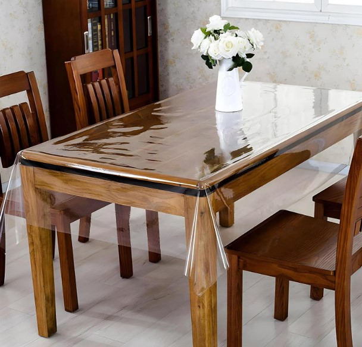

Transparent PVC sheets designed for visibility, protection, and durability across industrial, commercial, and fabrication applications.




PVC Clear Sheets are flexible, transparent plastic sheets widely used where visibility and protection are required simultaneously.
These sheets offer good clarity, durability, and resistance to moisture, making them suitable for stitching, covering, and partitioning applications in industrial environments.
For Indian manufacturing conditions, PVC sheet thickness should be selected based on stitching method and end use. Thicker sheets are preferred for tarpaulin windows and repeated folding applications, while thinner sheets are suitable for bags and light-duty covers. Proper needle selection and stitch spacing help prevent cracking.